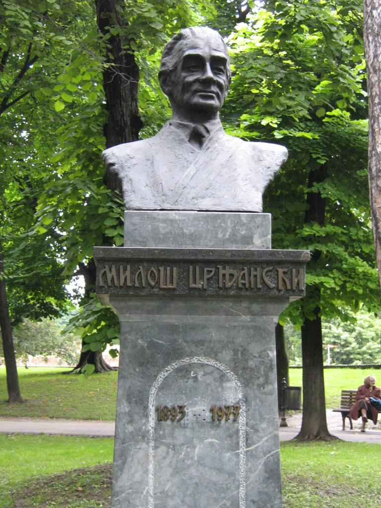

Miloš Crnjanski (Čongrad, 26. oktobar 1893 — Beograd, 30. novembar 1977) je bio srpski književnik i jedan od najznačajnijih stvaralaca srpske literature XX veka. Istakao se kao pesnik, pripovedač, romansijer i publicista. Bavio se i likovnom kritikom.

Crnjanski je rođen 1893. godine u Ilanči, u Banatu, u osiromašenoj građanskoj porodici, a odrastao je u Temišmaru, u patrijarhalno-rodoljubivoj sredini koja će mu kult Srbije i njene prošlosti usaditi u dušu kao najdjražu relikviju.
Najdublje i najtrajnije senzacije svojih dečjih i dečačkih godina doživljavao je u tipično nacionalnim i verskim sadržajima: crkvena škola, ikona svetoga Save, tamnjan, pravoslavno srpsko groblje sa ritualom sahrane i zadušnica, večernje priče i pesme o Srbiji, hajdučiji i nabijanju na kolac — sve se to u dečakovim emocijama pretvaralo u trajan nemir i nepresušan /izvor nada, radosti, sumnji, razočaranja i podizanja.
Na samom početku prvog svetskog rata Crnjanski je doživeo odmazdu austrijskih vlasti zbog Principovih revolverskih hitaca u Sarajevu, ali umesto tamničkog odela obukli su mu uniformu austrijskog vojnika i poslali ga na galicijski front da juriša na Ruse. Veći deo vremena iz tih tragičnih ratnih dana Crnjanski provodi u samoći ratne bolnice, više uz miris jodoforma nego baruta, da bi se tek pred sam kraj rata obreo i na italijanskom frontu. U njegove uspomene neizbrisivo su se utisnuli prizori ratne pustoši. "...Front, bolnice, pa opet front, i ljubavi, svuda ljubavi, za hleb i za šećer, sve mokro, sve kiša, i blato, magle, umiranja" — to su bila viđenja života u kojima je sazreo mladi Crnjanski. Trideset miliona nedužnih mrtvih ljudi našlo je mesto u antiratnim stihovima ovog nesrećnog mladog ratnika koje je on iz rata doneo u svojoj vojničkoj torbi, prvo u Zagreb a zatim u Beograd, gde se najduže zadržao.